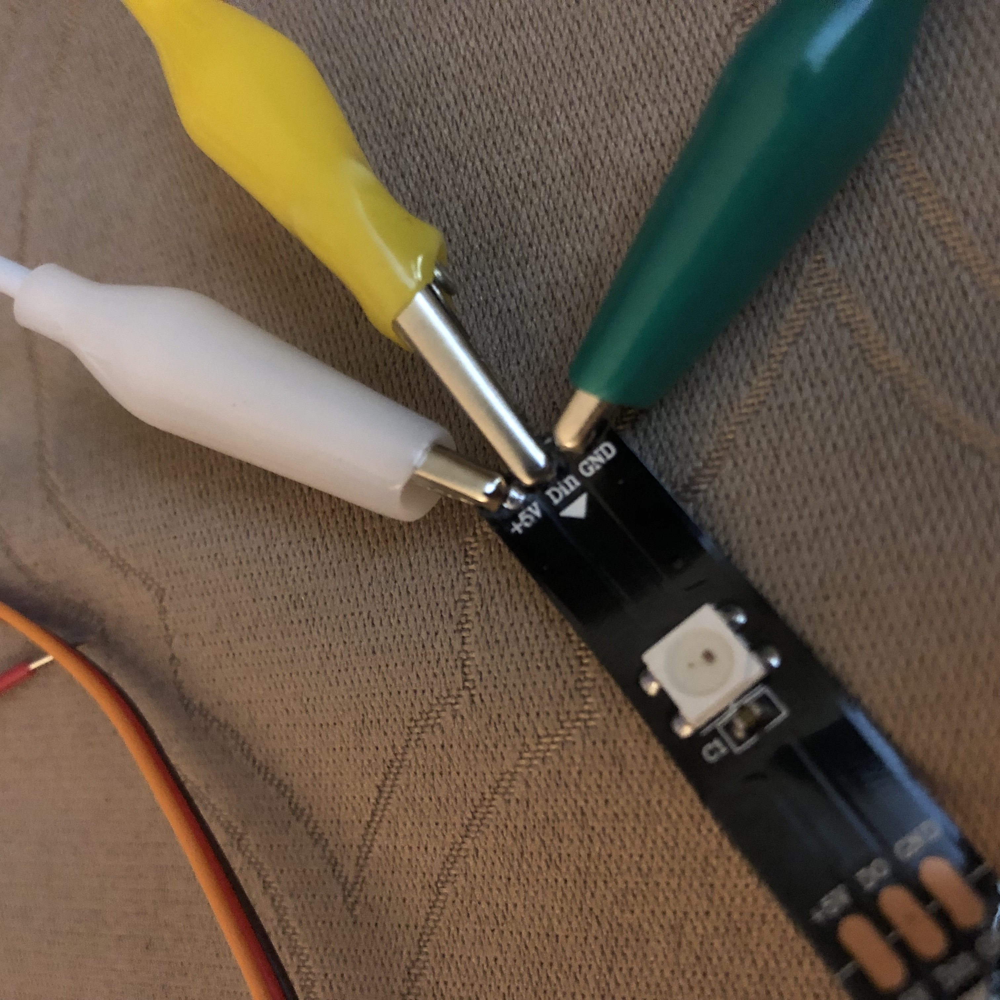

I really wanted to gain experience with both LED strips and stepper motors. If I had a photoresistor, I would have made the stepper motor control the shade over the sensor to then turn on the LED strip, but alas I could not find one. As per usual, I made the device on/off controllable, and this time with a push button.
The first circuit: LED strip.

To control the LED with Arduino, you have to install the Adafruit Neopixels library first. Then use a 300-500 Ohm resistor in the middle as per the specifications, however I am using a 1K Ohm resistor here so I turned the brightnesslevel (in the code) up to 20.
The second circuit: a push button.
A 1k Ohm connects one side of the switch to ground to allow for current to go to positive (road with less resistance) one the button is pressed and the circuit is closed.
The third circuit: a servo motor.
This just required following the guide online.
The code used:
#include
#include
Servo myservo; //create object
#define PIN 9
#define NUMPIXELS 10
#define DELAYVAL 500 // Time (in milliseconds) to pause between pixels
#define BUTTONPIN 2
#define SERVOPIN 12
Adafruit_NeoPixel strip(NUMPIXELS, PIN, NEO_GRB + NEO_KHZ800);
void setup() {
myservo.attach(SERVOPIN); // attaches the servo on pin 12 to the servo object
strip.begin(); // INITIALIZE NeoPixel strip object (REQUIRED)
strip.show(); // Turn OFF all pixels ASAP
strip.setBrightness(20); // Set BRIGHTNESS low to reduce draw (max = 255)
pinMode(BUTTONPIN, INPUT);
}
void loop() {
myservo.write(60);
delay(1000);
myservo.write(0);
digitalWrite(SERVOPIN, LOW);
strip.clear(); // Set all pixel colors to 'off'
if (digitalRead(BUTTONPIN) == HIGH) {
// The first NeoPixel in a strand is #0, second is 1, all the way up
// to the count of pixels minus one.
for(int i=0; i < NUMPIXELS; i++) { // For each pixel...
// strip.Color() takes RGB values, from 0,0,0 up to 255,255,255
// Here we're using a moderately bright green color:
strip.setPixelColor(i, strip.Color(100, 0, 70));
strip.show(); // Send the updated pixel colors to the hardware.
delay(DELAYVAL); // Pause before next pass through loop
}
}
else {
strip.clear();
}
}